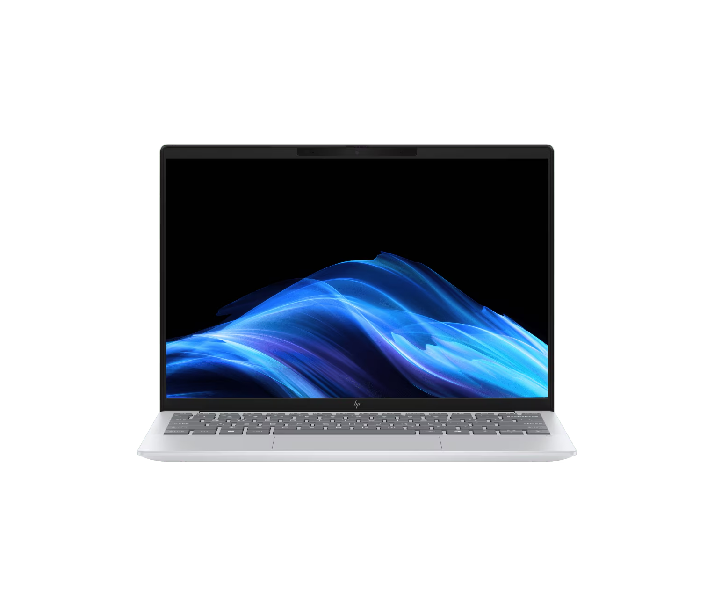

hp noutbook
noutbuk haqida
 HP Laptop 15-fc0246ci (CD2L4EA). Операционная система FreeDOS 3.0, процессор AMD Ryzen™ 7 7730U, объём памяти DDR4 — 16 ГБ, объём твёрдотельного накопителя — 1 ТБ, экран — 15,6 дюйма, FHD, ресурс батареи — до 10 часов. 1
HP OMEN 16. Процессор Intel Core Ultra 9 285H, видеокарта GeForce RTX 5070, RAM — 16 ГБ, SSD — 1000 ГБ, экран — 2560x1600, IPS, Windows 11 Home. 2
HP Victus 15 R7-7445H.br 16 ГБ DDR5, SSD 512 ГБ, экран — 15,6 дюйма, FHD IPS, 144 Гц, RTX 4050 6 ГБ. 3
HP Laptop 15-FD0095wm. Intel i5-1235U, экран — 15,6 дюbr
йма,
HP Laptop 15-fc0246ci (CD2L4EA). Операционная система FreeDOS 3.0, процессор AMD Ryzen™ 7 7730U, объём памяти DDR4 — 16 ГБ, объём твёрдотельного накопителя — 1 ТБ, экран — 15,6 дюйма, FHD, ресурс батареи — до 10 часов. 1
HP OMEN 16. Процессор Intel Core Ultra 9 285H, видеокарта GeForce RTX 5070, RAM — 16 ГБ, SSD — 1000 ГБ, экран — 2560x1600, IPS, Windows 11 Home. 2
HP Victus 15 R7-7445H.br 16 ГБ DDR5, SSD 512 ГБ, экран — 15,6 дюйма, FHD IPS, 144 Гц, RTX 4050 6 ГБ. 3
HP Laptop 15-FD0095wm. Intel i5-1235U, экран — 15,6 дюbr
йма,FHD IPS, 8 ГБ, SSD 256 ГБ, Windows 11. 3 HP Elitebook 630. i5-1335U, DDR4 8 ГБ, SSD 512 ГБ, экран — 13,3 дюйма, Full HD, DOS. 3 Посмотреть модели ноутбуков HP и найти информацию о них можно на сайте hp.com. 1
